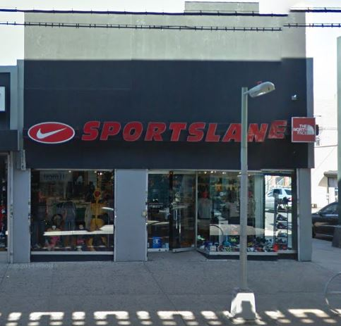

Work:
|
Fabberz
580 8th Ave, New York, NY 10019— Intern
* Operate computer-assisted engineering or design software or equipment to perform engineering tasks.  Sportslane
116-15 Liberty Ave, South Richmond Hill, NY 11419 * Stocked shelves and supplies and organized displays; * Organized racks and shelves to maintain the visual appeal of the store by size, style and color. * Developed positive customer relationships through friendly greetings and excellent service; * Maintained knowledge of current sales and promotions, policies regarding payment and exchanges and security practices; |
Volunteer:
|
Hillcrest HS
06-05 Highland Avenue, New York, 11421
* Describe tour points of interest to group members, and respond to questions. |